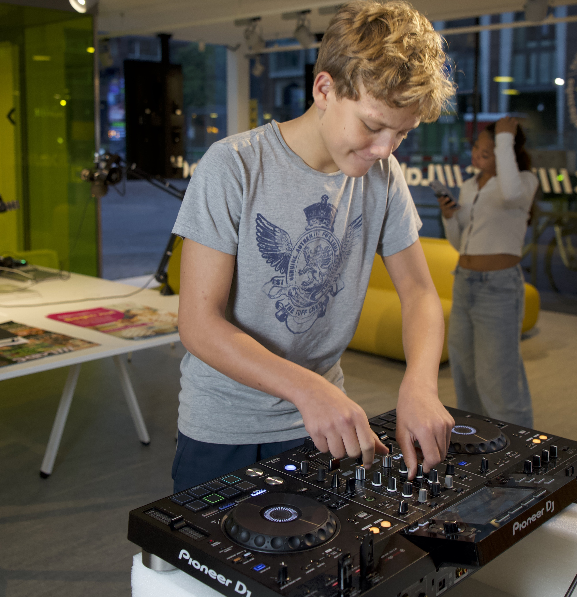

DJ Lab
Kom langs, laat je creativiteit horen en maak deel uit van een inspirerende community van jonge muziekliefhebbers. Of je nu beginner bent of al wat ervaring hebt, bij ons is er plek voor iedereen die zijn passie voor muziek wil ontwikkelen.

Allemaal aan het DJ-en